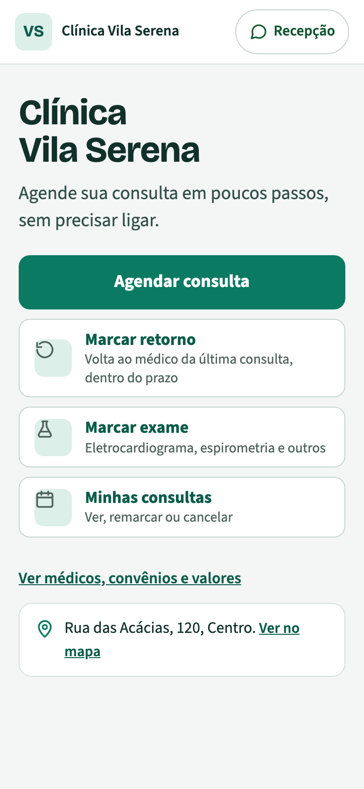
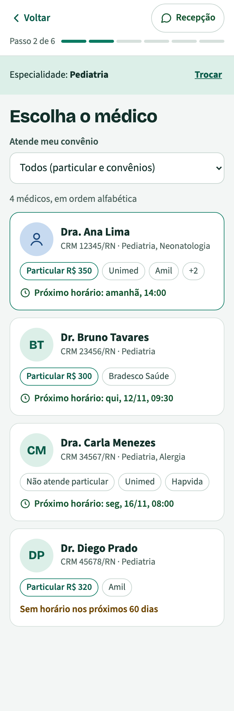
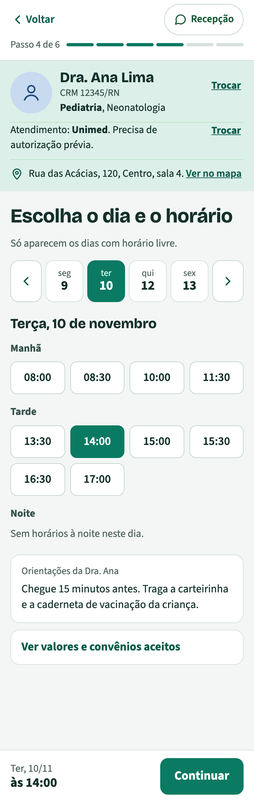
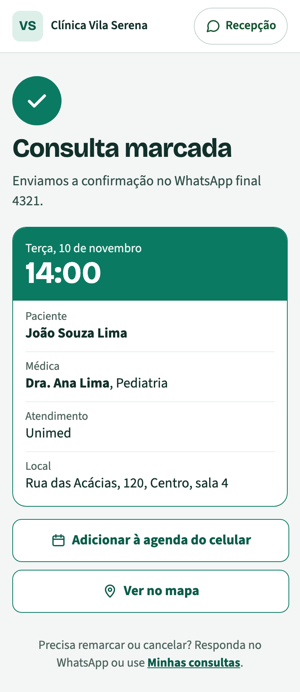

Hoje a recepção usa o CliqueMassa no WhatsApp e lança as consultas no sistema de prontuário para os médicos verem a agenda. Com o RecepClinic, a recepção inteira (WhatsApp, conversas, agenda e marcação online) fica num lugar só.
| Hoje | Com o RecepClinic |
|---|---|
| Dois sistemas para a recepção: CliqueMassa no WhatsApp e o sistema de prontuário como agenda | Um sistema só para a recepção: WhatsApp, conversas, agenda e portal de agendamento |
| A secretária marca e depois lança a consulta no sistema de prontuário | Marca uma vez: o bot, o portal e a secretária usam a mesma agenda |
| Todo médico obrigado a usar o mesmo sistema de prontuário para ver a agenda | Cada médico vê a própria agenda no RecepClinic e fica livre para usar o prontuário que preferir |
| Paciente marca só quando a recepção está aberta | Agendamento 24 horas pelo portal, com o link da clínica e o link de cada médico |
| A mesma pergunta o dia inteiro: convênio, valor, endereço | O WhatsApp responde sozinho, com as informações de cada médico |
| Confirmação ligando paciente por paciente | Lembrete automático com os botões Confirmar, Remarcar e Cancelar |
| Sem saber quantos pacientes procuraram e não marcaram | Números da recepção: pedidos, de onde vêm e quantos viram consulta |
Informações, marcações simples e confirmações saem sozinhas. As secretárias cuidam de quem precisa delas.
Marcação 24 horas e nenhuma conversa esquecida: a procura que já existe vira consulta.
Só o que o médico atende, nenhum horário em dobro e lembrete antes de cada consulta.
A agenda deixa de depender do sistema de prontuário. Cada médico escolhe o dele.
Quantos procuraram, por onde chegaram e quantos marcaram, mês a mês.
Mais atendimentos com as mesmas 3 secretárias.
O paciente escolhe a especialidade, o médico, o convênio e o horário, sozinho, pelo celular, a qualquer hora. Sem CPF e sem senha: ele confirma com um código que chega no próprio WhatsApp. Só aparecem horários livres e convênios que o médico atende.




No site, no Instagram, no Google e no cartão do médico, com QR code. O link do médico abre direto nos horários dele.
A marcação sai do WhatsApp e vai para o portal: menos mensagens trocadas, menos custo por consulta.